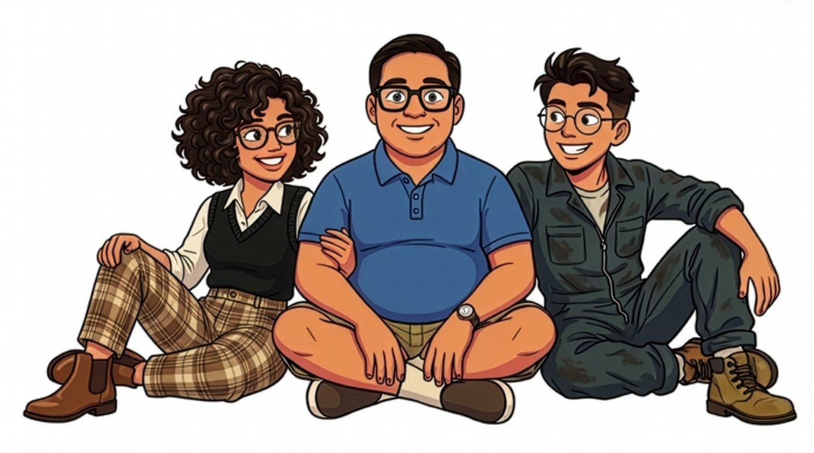

Episode 1: Title goes here
A short description of the questions answered in this episode.
Decoded by Dad is a podcast where my two oldest kids ask me the questions they really want answered about growing up, faith, character, relationships, and technology. I answer honestly, as a Catholic father who has made his share of mistakes and doesn't have it all figured out. If you're a teenager asking the same questions, or a parent wondering how to talk about them, pull up a chair and listen in.

Living as Catholics in a world that doesn't always make it easy.
Becoming an adult, deciding what comes after high school (college and work included), and learning from mistakes.
Honesty, integrity, and doing the right thing when nobody is watching.
Friends, dating, family, and how to treat people well.
Phones, social media, and finding healthy limits.
A short description of the questions answered in this episode.
A short description of the questions answered in this episode.
We are a devoted Catholic family, and our faith is the foundation of our home. It guides every answer you'll hear on this show.
I'm a dad of a big family. My two oldest, an 18-year-old son and a 17-year-old daughter, are at the point where the questions get bigger, and I want them to hear my answers in my own words.
I don't have everything figured out. I'll tell you what I've learned, what I'd do differently, and when the honest answer is "it depends."
Each episode starts with questions my kids send in. We talk them through, and I give my best answer.
Anyone is welcome to listen along, especially other parents and teenagers who are asking the same things.
— DadYou have made us for yourself, O Lord, and our heart is restless until it rests in you.